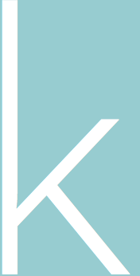

ristin gulledge BURTON is a tallish, music-loving mixed-media
fine artist
who enjoys drawing people and tiny plants.
you can buy them here!
she's also a brand strategist and
graphic designer
who designs to communicate. on occasion, she wields a camera as a
portrait and event photographer
, favoring a photojournalistic approach, but also really enjoys
small product photography
. secretly, she's closet
writer
and kind of a nerd as well.
If you need branding, design, or photography work, let's chat over hot chocolate and make it happen!